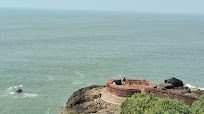
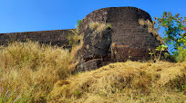
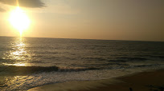

Bekal Fort

Kasaragod boasts of the largest and best preserved Fort in the whole of Kerala, bordered by a magnificent beach. Shaped like a giant keyhole, the historic Bekal Fort was built in the 17th century. This historic monument offers a superb view of the Arabian Sea from its tall observation towers, which were occupied by gigantic cannons till afew centuries ago.
Near the Fort is an old Mosque that is said to have been built by Tipu Sultan of Mysore. Originally constructed by the rulers of the ancient Kadampa Dynasty, the Fort Kasaragodd hands over the years to the Kolathiri Rajas, the Vijayanagara Empire, Tipu Sultan and finally, the British East India Company.v
Kanwatheertha Beach

Chandragiri Fort is another historical landmark in the district situated in the south-east of Kasaragod town. The Chandragiri River that flows nearby once bordered the kingdoms of Kolathunadu and Tulunadu. The origin of the fort goes back to the times of Keladi Nayakas who took control of the region as the Vijayanagara Empire fell. Shivappa Nayak secured his empire by renovating and constructing many forts around the area one of which is Chandragiri which was built in the 17th century. The remnants of the fort which can be seen on a small hill overlook the estuary where the Payaswini River joins the Arabian Sea. The old laterite walls around the fort still bear marks of cannonball attacks. The ancient Kizhur Sastha temple and a mosque are situated near the fort. The fort is now maintained by the Archaeology Department of India. Boat services are available here that will take you to nearby islands and palm groves. Speed boat rides,houseboat cruises, island camping and wildlife tours in the hinterlands can also be arranged.
title

A large formation akin to a swimming pool, in the middle of the sea, is what draws in large crowds to Kanwatheertha Beach in Manjeswaram. Its vast beach is picture perfect to simply sit down, soak in the sun and have a delightful picnic. People can be seen taking a refreshing dip and families stroll around happily, enjoying the equable climate and lovely sights, the entire time.